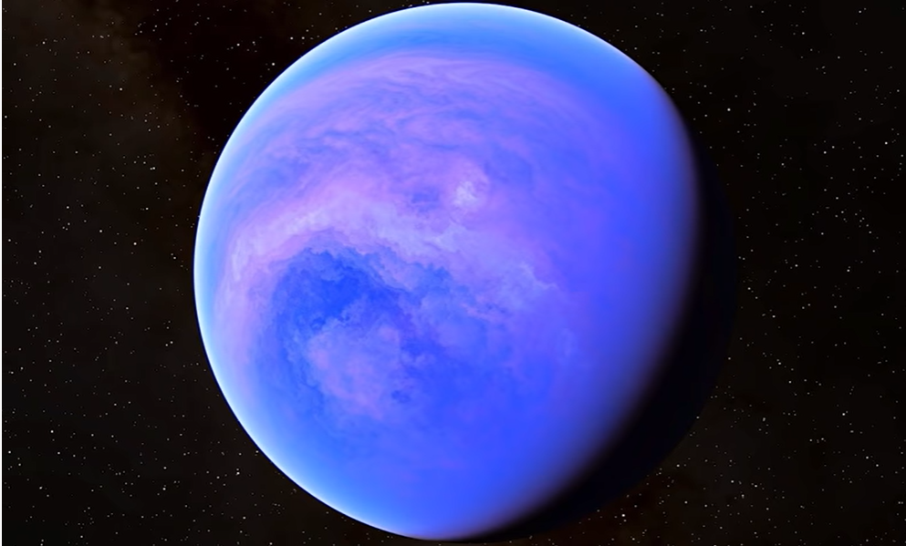
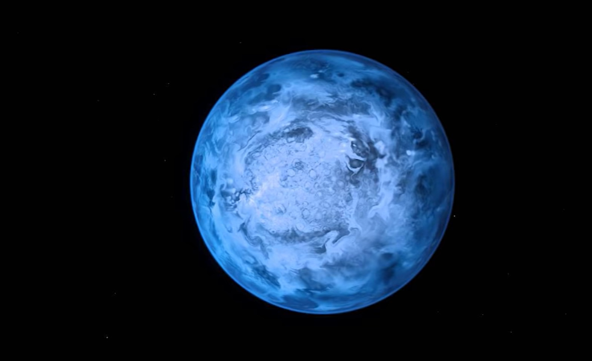
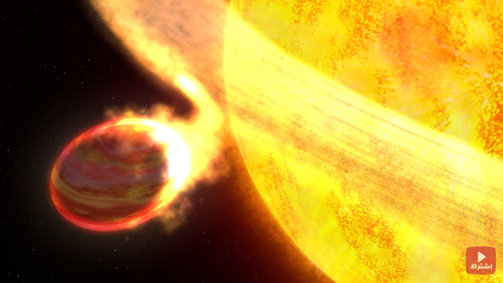
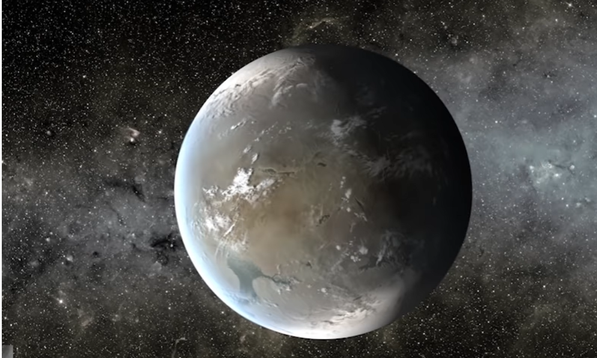

This planet is the owner of the title of the water planet and was classified as a completely watery planet, and this is because there is no land at all, the water is so deep that it reaches the center of the planet, and anyone who climbs on this planet will only see water in all directions. This is what makes him win the title Well-deserved water planet
This planet rains pieces of glass always and everywhere on the surface of the planet, the planet is completely filled with silicon particles, which gives it its beautiful blue color, but due to the extreme surface temperature, the silicon particles are compressed and turned into blocks of glass and also all the time the glass is flying everywhere on the planet due to the wind Extremely high speeds up to 6400 km/h
This planet literally melts because of the star that revolves around it and the planet orbits so close to this star that the heat melts the surface of the planet and its mass erodes during its rotation. This planet is close to the size of Jupiter. 6,000,000,000 tons of its mass per second, and as a result of this planet losing its mass very quickly, the planet became spherical, like an egg
This planet is very special and has been voted by the scientific community as one of the three most discovered planets that could have life, and yet it is very different from Earth. The star it orbits is classified as a red dwarf, a type of relatively small and relatively cool star. That is, if you are on the surface of this planet and you look at the sky, you will find that it is always red in color and also the planet is a material that is not restricted, such as the moon, which belongs to the planet Earth. Its temperature is so high that it melts anyone who could stand there on the other side of the planet and far from the star. Its temperature is so cold that it can freeze a person instantly. What made this planet classified as potentially life-sustaining is because there is a narrow line along the length of the planet separating the cold region and the hot region, and the temperature in this line is suitable for life.
470 light-years away from the planet Earth, a planet was discovered by the Kepler telescope, which the planet was named after its name. And it was discovered in January 2015 and this planet has all the ingredients that allow the existence of life on it and the distance of this planet from its star places it in a position called by dermal scientists Luzon, which is the habitable zone and this happens when the planet is not close to its star to the point that it makes it very hot It is not so far from the satellite that it is very cold, which means that this planet is very likely to have water on its surface in its liquid state, which is one of the most important causes of life.
